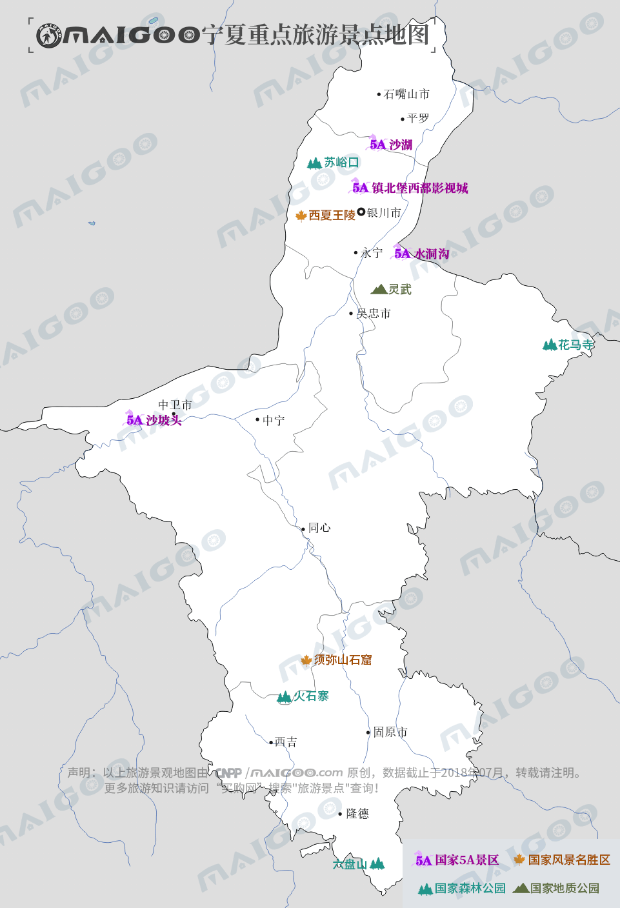

| | | | | |
| - | - | - | - | - |
|<b>别名</b>|塞上江南||<b>著名景点</b>|水洞沟，沙坡头，火石寨|
|<b>行政区类别</b>|自治区||<b>机 场</b>|银川河东国际机场、中卫香山机场、固原六盘山机场|
|<b>所属地区</b>|中国西北||<b>火车站</b>|银川站、石嘴山站等|
|<b>下辖地区</b>|5个地级市||<b>车牌代码</b>|宁A—宁E|
|<b>电话区号</b>|（+86）0951-0955||<b>GDP</b>|3150.06亿元（2016年）|
|<b>邮政区码</b>|750000-756400||<b>人均GDP</b>|46202元|
|<b>地理位置</b>|贺兰山东麓，黄土高原北部||<b>名称寓意</b>|夏地安宁|
|<b>面 积</b>|6.64万平方千米||<b>高等院校</b>|宁夏大学、宁夏医科大学|
|<b>人 口</b>|681.79万（2017年）||<b>行政区划代码</b>|640100-640500|
|<b>方 言</b>|兰银官话||<b>现任领导</b>|党委书记石泰峰，区主席咸辉|
|<b>气候条件</b>|温带大陆性半干旱气候||-|-|
| <b>宁夏生活文化</b> | <b>宁夏特色文化</b> | <b>宁夏曲艺文化</b> | <b>宁夏建筑文化</b> | <b>宁夏宗教文化</b> |
| - | - | - | - | - |
| <a href="javascript:;" onclick="live(this);">习俗/民俗</a> | <a href="javascript:;" onclick="feature(this);">杨氏家族泥塑</a> | <a href="javascript:;" onclick="art(this);">山花儿</a> | <a href="javascript:;" onclick="building(this);">窑洞/堡子</a> | <a href="javascript:;" onclick="religion(this);">寺庙/庙宇</a> |
| <a href="javascript:;" onclick="live(this);">方言文化</a> | <a href="javascript:;" onclick="feature(this);">高台马社火</a> | - | - | - |
| <a href="javascript:;" onclick="live(this);">嫁娶文化</a> | <a href="javascript:;" onclick="feature(this);">回族剪纸</a> | - | - | - |
| <a href="javascript:;" onclick="live(this);">饮食文化</a> | <a href="javascript:;" onclick="feature(this);">贺兰皮影戏</a> | - |-|-|
| <a href="javascript:;" onclick="live(this);">宁夏禁忌</a> | <a href="javascript:;" onclick="feature(this);">北武当庙寺庙音乐</a>| -|-|-|
## <i class="fa fa-file-text-o"></i>&nbsp;目录（Table of Contents）
+ [I. 总路线图（参考"内蒙古"）](neimenggu.html)
+ [II. 景点](#two)
+ [III. 路线规划（参考"内蒙古"）](neimenggu.html)
<h2 id="two"><i class="fa fa-star-o"></i>&nbsp;景点</h2>
